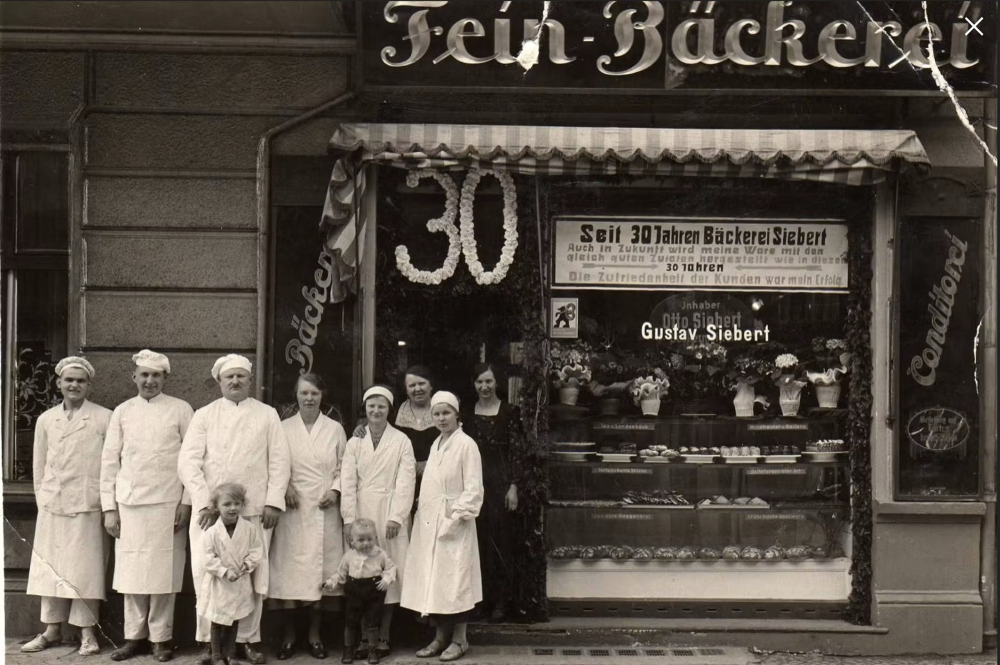
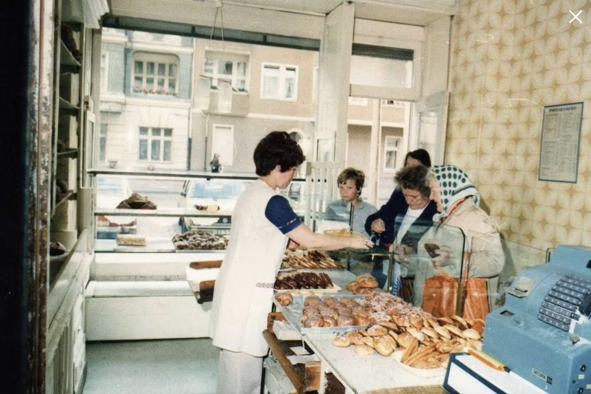
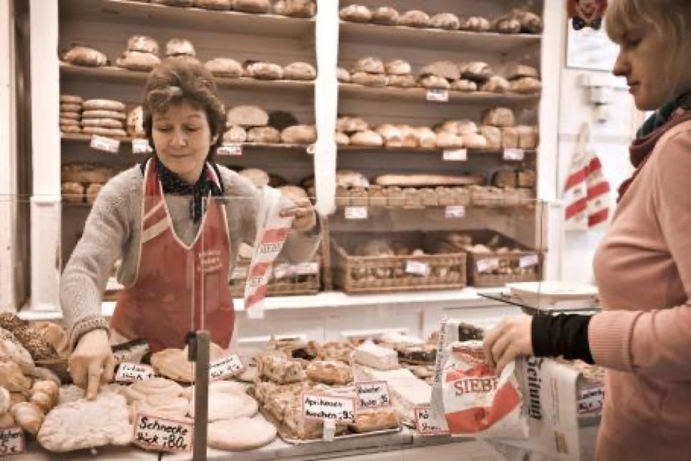
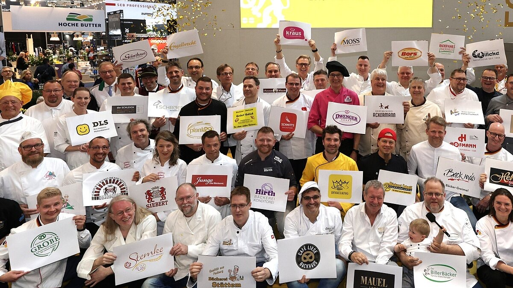

Geschichte
Seit 1906 hinter derselben Ladentür
Fünf Generationen Familie Siebert. Eine Adresse: Schönfließer Straße 12, Prenzlauer Berg.
Der Ort
Immer Schönfließer Straße 12
Gustav Siebert kam aus Ostpreußen und eröffnete 1906 in der Schönfließer Straße. Seitdem ist die Bäckerei nie umgezogen und nie unterbrochen worden. In den schweren Jahren nach dem Krieg teilte sich die Familie den Raum mit der Backstube: Die Großeltern schliefen mit ihren drei Kindern im heutigen Konditorraum, neben den Arbeitsgeräten.


Die Familie
Von Gustav bis Anke: fünf Generationen
überfahren fürs Foto · klicken für die Geschichte
 1906 Gustav
Der Gründer
1906 Gustav
Der Gründer
Gustav Siebert kommt aus Ostpreußen und eröffnet 1906 die Bäckerei in der Schönfließer Straße. Er führt das Haus durch Kaiserreich und Ersten Weltkrieg und legt die Adresse fest, an der die Familie bis heute backt. 1929 stirbt er.
1929 Otto Gustavs Neffe
Gustavs Neffe übernimmt 1929 nach dem Tod des Gründers. Er hält den Betrieb durch den Zweiten Weltkrieg und die Nachkriegszeit: Die Familie schläft im Konditorraum neben den Arbeitsgeräten und weigert sich, den Laden zu verstaatlichen. Anfang der 1960er übergibt er an seinen Sohn Bodo. Das Foto zeigt das 30-Jahr-Jubiläum 1936, davor der dreijährige Bodo.

DDR Bodo
Ottos Sohn
Ottos Sohn führt den Laden durch die DDR-Jahre. Er hält das private Handwerk gegen die Mangelwirtschaft am Leben: Butter, Rosinen und Mandeln sind Mangelware, verstaatlicht wird trotzdem nicht. Bis zum Mauerfall bleibt die Bäckerei in Familienhand.

1990 Lars
Bodos Sohn
Direkt nach der Wende übernimmt Lars. Er bewahrt die DDR-Originalrezepte, die Schrippen und die Splitterbrötchen, und macht den Laden zur Kult-Institution im Prenzlauer Berg. Bis 2021 steht sein Name über der Tür.
 2021 Dr. Anke Siebert
Lars’ Tochter
2021 Dr. Anke Siebert
Lars’ Tochter
Seit 2021 führt Dr. Anke Siebert in fünfter Generation, Ururenkelin des Gründers Gustav. Die promovierte Wirtschafts- und Umweltwissenschaftlerin übernimmt von ihrem Vater Lars und bringt die Bäckerei ins Heute: digitalisiert, bargeldloses Zahlen, ohne das Handwerk anzufassen.
Auszeichnungen
Die Wände hängen voller Urkunden
DER FEINSCHMECKER zählt die Bäckerei immer wieder zu den besten Bäckern Deutschlands, unter anderem 2013 und 2017. Die Bäckerinnung Berlin verlieh mehrfach die Goldene Brezel. Im Mai 2026 wählten die Berliner das Roggenmischbrot zum Publikumsliebling der ersten öffentlichen Brotwahl.

Das Jubiläum · 120 Jahre
Noch im Lostopf
2026 wird dieses Haus 120.
Jubiläums-Ziehung · Ein Los
Das Goldene Ticket
Ein Leben lang gratis
An jedem Öffnungstag Backwaren bis 10 Euro gratis, so lange es die Bäckerei gibt.
Oktober
Der Verkauf der Jubiläumsgutscheine lief bis Ende Juli. Jetzt wird gezogen: von August bis September jede Woche 120 Preise, im Oktober der Hauptpreis.
Am besten probieren Sie selbst
Frisch schmeckt man am besten
Di–Fr 6:00–18:30 · Sa bis 13:30. Schönfließer Straße 12 im Prenzlauer Berg.